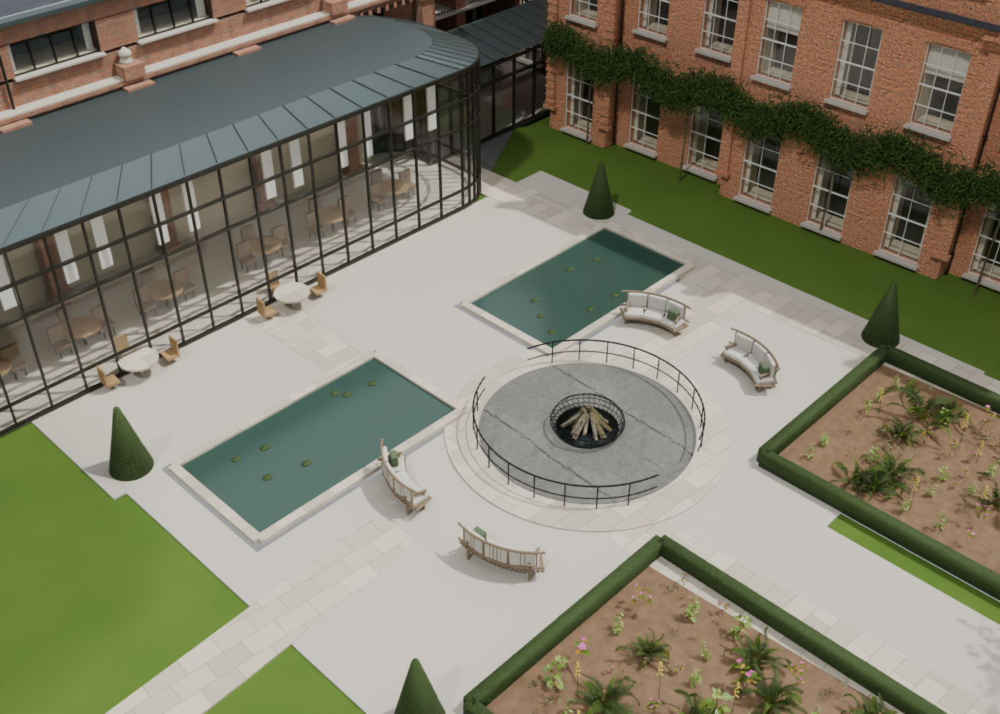
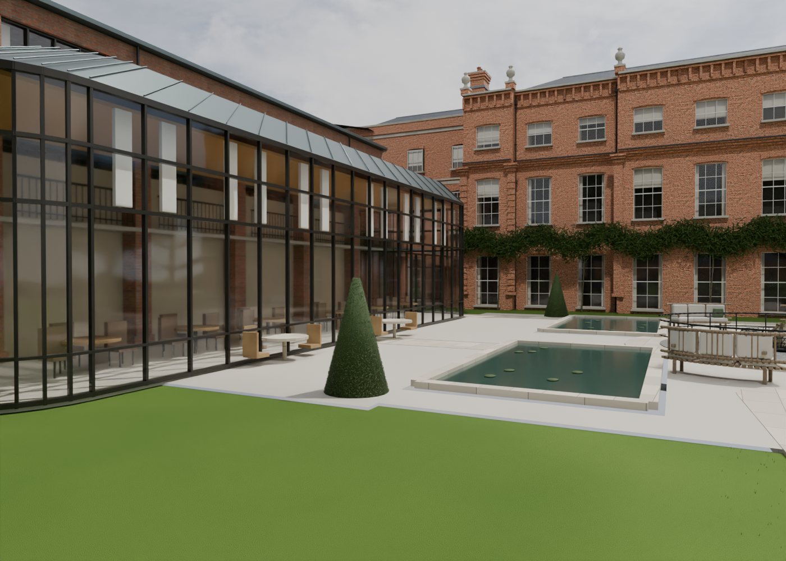
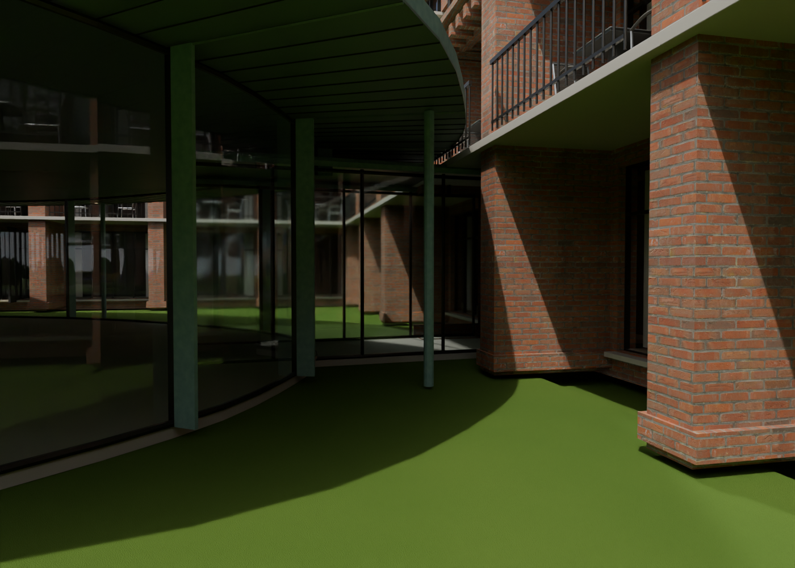
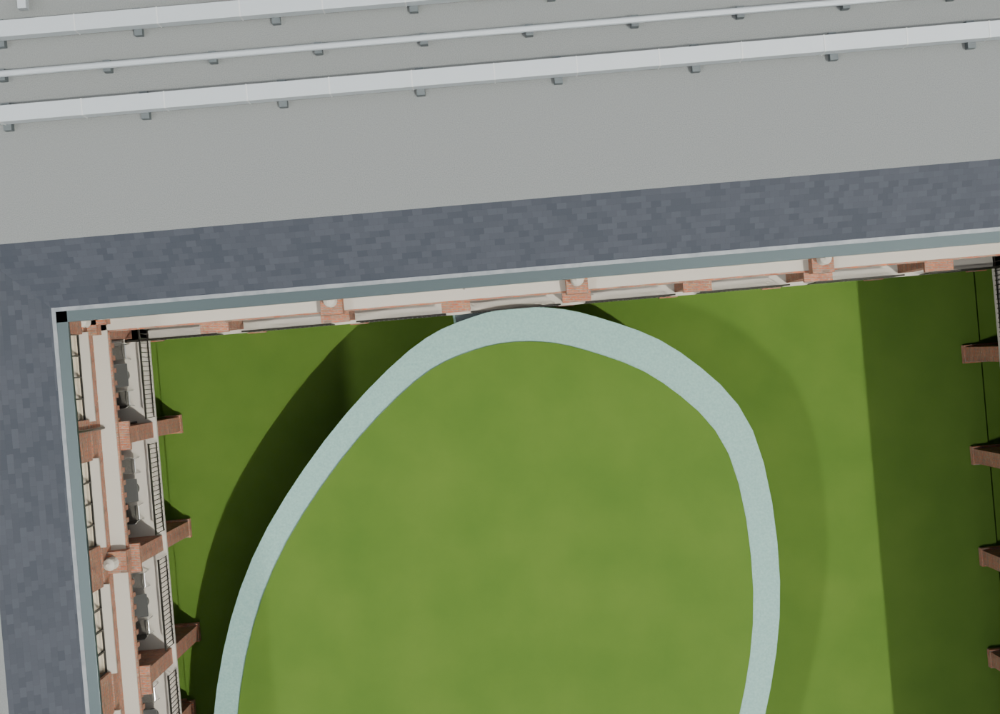

V30 moves the paired ponds and garden 3.5 metres away from the Glasshouse restaurant, restoring a wider dining terrace. A short curved glazed corridor connects Cedar to the annex foyer, following the official venue plan. Dimensions and concealed joints remain estimates.
Glasshouse garden · Cedar corridor




Earlier V29 Sunken Garden gallery — the accepted Sunken Garden is retained.